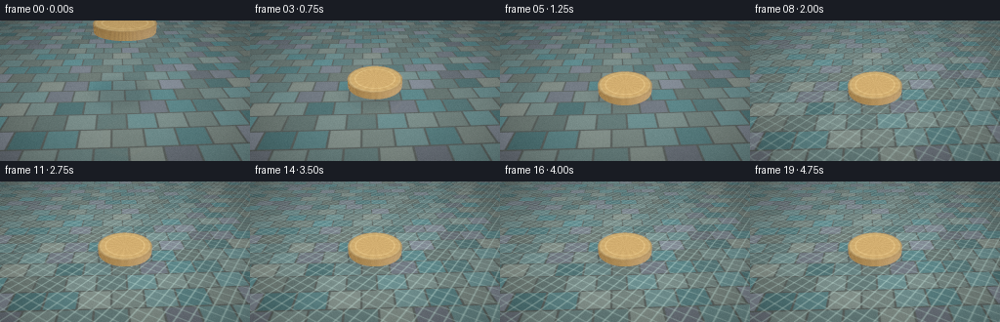
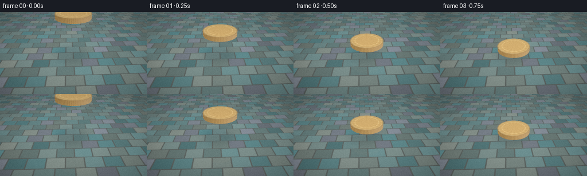
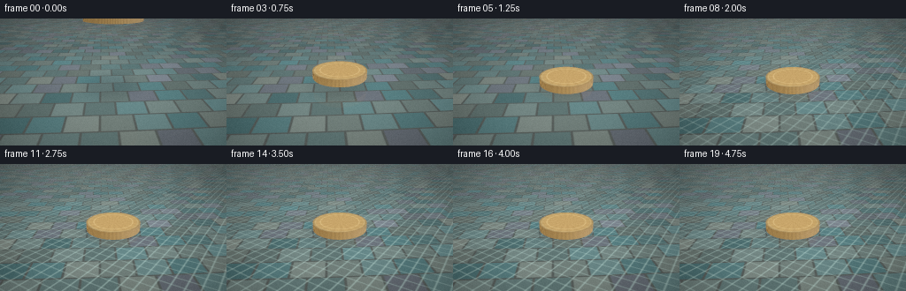
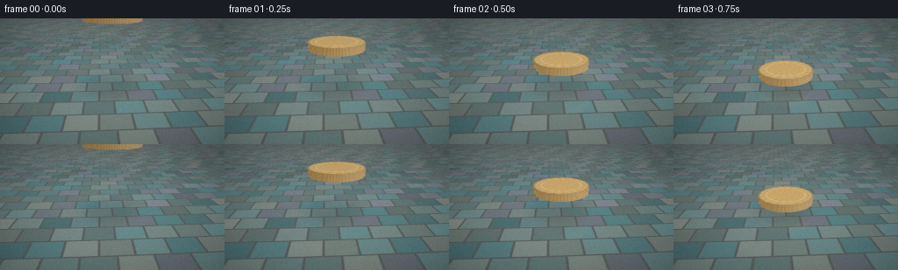

CODING AGENTS AS PIXEL WORLD MODELS
traex/DeepSeek-V4.1-Flash · mechanics_0012
点击播放 · 原生 RGB 像素
此结果可播放，但该运行尚未通过最终提交审核。页面展示不代表评测通过。
逐轮保存的候选
回放视频、检查图与代码变化。
每份候选均可单独播放。实际图片检查记录在下方工具轨迹中。
候选 01播放与检查图
点击播放 · 原生 RGB 像素


展开代码变化
--- 上一保存版本
+++ 本次保存版本
@@ -0,0 +1,424 @@
+from __future__ import annotations
+
+from pathlib import Path
+
+import cv2
+import numpy as np
+
+import artifact_io
+
+
+W, H = 256, 144
+N, FPS = 20, 4.0
+SS = 3
+
+CAMERA = np.array([0.18, 2.72, -4.15], dtype=np.float32)
+TARGET = np.array([0.0, -0.01, 0.20], dtype=np.float32)
+UP = np.array([0.0, 1.0, 0.0], dtype=np.float32)
+VFOV = np.deg2rad(36.0)
+
+COIN_R = 0.63
+COIN_T = 0.165
+COIN_Z = 0.22
+CONTACT_TIME = 1.72
+
+
+def normalize(v, axis=-1):
+ return v / np.maximum(np.linalg.norm(v, axis=axis, keepdims=True), 1e-7)
+
+
+def smoothstep(edge0, edge1, x):
+ t = np.clip((x - edge0) / (edge1 - edge0), 0.0, 1.0)
+ return t * t * (3.0 - 2.0 * t)
+
+
+def coin_center_y(t):
+ # A short, decelerating release: no bounce, just a soft placement.
+ u = np.clip(t / 1.45, 0.0, 1.0)
+ y = 1.42 * (1.0 - (1.0 - (1.0 - u) ** 3))
+ settle = max(0.0, t - 1.45)
+ return COIN_T * 0.5 + y + 0.004 * np.exp(-5.0 * settle) * np.sin(16.0 * settle)
+
+
+def camera_rays():
+ xs = (np.arange(W * SS, dtype=np.float32) + 0.5) / (W * SS)
+ ys = (np.arange(H * SS, dtype=np.float32) + 0.5) / (H * SS)
+ x = (xs * 2.0 - 1.0) * (W / H) * np.tan(VFOV * 0.5)
+ y = (1.0 - ys * 2.0) * np.tan(VFOV * 0.5)
+ xx, yy = np.meshgrid(x, y)
+ forward = normalize(TARGET - CAMERA)
+ right = normalize(np.cross(forward, UP))
+ up = np.cross(right, forward)
+ directions = normalize(forward + xx[..., None] * right + yy[..., None] * up)
+ return directions
+
+
+RAYS = camera_rays()
+
+
+def hash21(x, z):
+ return np.modf(np.sin(x * 127.1 + z * 311.7) * 43758.5453)[0]
+
+
+def background(directions):
+ if directions.ndim == 3:
+ y = np.linspace(0.0, 1.0, H * SS, dtype=np.float32)[:, None]
+ x = np.linspace(0.0, 1.0, W * SS, dtype=np.float32)[None, :]
+ else:
+ # Reflected rays are shaded in direction space; the reflected ceiling is
+ # intentionally darker than the visible back wall.
+ x = np.clip(0.5 + 0.42 * directions[:, 0], 0.0, 1.0)
+ y = np.clip(0.20 - 0.75 * directions[:, 1] + 0.03 * directions[:, 2], 0.0, 1.0)
+
+ top = np.array([0.055, 0.080, 0.090], dtype=np.float32)
+ bottom = np.array([0.105, 0.115, 0.110], dtype=np.float32)
+ blend = smoothstep(0.00, 0.235, y)
+ col = top * (1.0 - blend[..., None]) + bottom * blend[..., None]
+
+ # Soft, out-of-focus stone courses above the waterline.
+ stone = 0.012 * np.sin(29.0 * x + 3.0 * np.sin(7.0 * y))
+ stone += 0.010 * np.sin(51.0 * y + 2.0 * np.sin(13.0 * x))
+ stone *= smoothstep(0.00, 0.05, y) * (1.0 - smoothstep(0.17, 0.24, y))
+ col += stone[..., None] * np.array([0.55, 0.70, 0.68], dtype=np.float32)
+
+ # The far lip of the basin catches a restrained warm edge.
+ edge_y = 0.205 + 0.005 * np.sin(12.0 * x) + 0.003 * np.sin(31.0 * x + 0.7)
+ lip = np.exp(-((y - edge_y) / 0.009) ** 2)
+ lip *= 0.6 + 0.4 * np.sin(20.0 * x) ** 2
+ col += lip[..., None] * np.array([0.16, 0.14, 0.105], dtype=np.float32)
+
+ # Cool reflected light along the rim, broken into tiny ceramic highlights.
+ glint = np.exp(-((y - (edge_y + 0.008)) / 0.0045) ** 2)
+ glint *= np.maximum(0.0, np.sin(53.0 * x + 1.3)) ** 8
+ col += glint[..., None] * np.array([0.20, 0.28, 0.28], dtype=np.float32)
+
+ # A barely visible reflected coin glow in the polished upper background.
+ dx = (x - 0.51) / 0.20
+ dy = (y - 0.105) / 0.055
+ halo = np.exp(-(dx * dx + dy * dy) * 2.1)
+ col += halo[..., None] * np.array([0.055, 0.042, 0.025], dtype=np.float32)
+ return col
+
+
+def ripple_height_grad(px, pz, t):
+ age = max(0.0, t - CONTACT_TIME)
+ if age <= 0.0:
+ return np.zeros_like(px), np.zeros_like(px), np.zeros_like(px)
+
+ dx = px
+ dz = pz - COIN_Z
+ r = np.sqrt(dx * dx + dz * dz) + 1e-5
+
+ height = np.zeros_like(px)
+ dhdr = np.zeros_like(px)
+ modes = (
+ (0.030, 0.80, 0.24, 5.0),
+ (0.018, 0.66, 0.37, 5.8),
+ (0.010, 0.54, 0.50, 7.0),
+ )
+ for amp, speed, width, decay in modes:
+ front = speed * age
+ phase = 46.0 * (r - front)
+ envelope = np.exp(-((r - front) / (width + 0.08 * age)) ** 2)
+ envelope *= (r <= front + width * 1.6)
+ envelope *= np.exp(-decay * age)
+ height += amp * envelope * np.sin(phase) / (1.0 + 2.2 * r)
+ dhdr += amp * envelope * (
+ 46.0 * np.cos(phase)
+ - 2.0 * (r - front) / (width + 0.08 * age) ** 2 * np.sin(phase)
+ ) / (1.0 + 2.2 * r)
+
+ # A small, rapidly damped depression marks the point of placement.
+ depression = -0.024 * np.exp(-(r / 0.105) ** 2) * np.exp(-3.0 * age)
+ height += depression
+ dhdr += depression * (-2.0 * r / 0.105**2)
+
+ # Meniscus rises just outside the coin's submerged edge.
+ meniscus = 0.010 * np.exp(-((r - COIN_R) / 0.035) ** 2)
+ meniscus *= smoothstep(0.0, 0.18, age)
+ height += meniscus
+ dhdr += meniscus * (-2.0 * (r - COIN_R) / 0.035**2)
+
+ dhdx = dhdr * dx / r
+ dhdz = dhdr * dz / r
+ return height, dhdx, dhdz
+
+
+def intersect_coin(origins, directions, center_y):
+ """Ray/cylinder intersection for a horizontal coin."""
+ n = origins.shape[0]
+ best_t = np.full(n, np.inf, dtype=np.float32)
+ best_part = np.zeros(n, dtype=np.int8)
+
+ for part, plane_y in ((1, center_y + COIN_T * 0.5), (2, center_y - COIN_T * 0.5)):
+ denom = directions[:, 1]
+ valid = np.abs(denom) > 1e-7
+ tt = np.where(valid, (plane_y - origins[:, 1]) / np.where(valid, denom, 1.0), np.inf)
+ hx = origins[:, 0] + tt * directions[:, 0]
+ hz = origins[:, 2] + tt * directions[:, 2]
+ rr = hx * hx + (hz - COIN_Z) ** 2
+ hit = valid & (tt > 1e-5) & (rr <= COIN_R * COIN_R) & (tt < best_t)
+ best_t[hit] = tt[hit]
+ best_part[hit] = part
+
+ ox = origins[:, 0]
+ oz = origins[:, 2] - COIN_Z
+ dx = directions[:, 0]
+ dz = directions[:, 2]
+ a = dx * dx + dz * dz
+ b = 2.0 * (ox * dx + oz * dz)
+ c = ox * ox + oz * oz - COIN_R * COIN_R
+ disc = b * b - 4.0 * a * c
+ side_valid = (disc >= 0.0) & (a > 1e-8)
+ root = np.sqrt(np.maximum(disc, 0.0))
+ ts = np.full(n, np.inf, dtype=np.float32)
+ ts[side_valid] = (-b[side_valid] - root[side_valid]) / (2.0 * a[side_valid])
+ hy = origins[:, 1] + ts * directions[:, 1]
+ side_valid &= (
+ (ts > 1e-5)
+ & (hy >= center_y - COIN_T * 0.5)
+ & (hy <= center_y + COIN_T * 0.5)
+ & (ts < best_t)
+ )
+ best_t[side_valid] = ts[side_valid]
+ best_part[side_valid] = 3
+ return best_t, best_part
+
+
+def coin_bump(x, z):
+ r = np.sqrt(x * x + (z - COIN_Z) ** 2)
+ theta = np.arctan2(z - COIN_Z, x)
+ ring = 0.0018 * np.exp(-((r - 0.455) / 0.012) ** 2)
+ star_r = 0.285 * (0.62 + 0.38 * np.cos(5.0 * theta))
+ star = 0.0032 * smoothstep(star_r - 0.012, star_r + 0.008, star_r - r)
+ bevel = 0.0012 * np.exp(-((r - 0.575) / 0.018) ** 2)
+ return ring + star + bevel
+
+
+def shade_coin(origins, directions, t, part, center_y):
+ q = origins + t[:, None] * directions
+ x = q[:, 0]
+ y = q[:, 1]
+ z = q[:, 2]
+ rr = np.sqrt(x * x + (z - COIN_Z) ** 2) + 1e-6
+ theta = np.arctan2(z - COIN_Z, x)
+
+ top = part == 1
+ bottom = part == 2
+ side = part == 3
+ normals = np.zeros_like(q)
+ normals[top] = np.array([0.0, 1.0, 0.0], dtype=np.float32)
+ normals[bottom] = np.array([0.0, -1.0, 0.0], dtype=np.float32)
+ normals[side, 0] = x[side] / rr[side]
+ normals[side, 2] = (z[side] - COIN_Z) / rr[side]
+
+ if np.any(top):
+ eps = 0.004
+ bx = coin_bump(x[top], z[top])
+ hx = coin_bump(x[top] + eps, z[top]) - coin_bump(x[top] - eps, z[top])
+ hz = coin_bump(x[top], z[top] + eps) - coin_bump(x[top], z[top] - eps)
+ normals[top] = normalize(
+ np.stack([-hx / (2.0 * eps), np.ones(np.count_nonzero(top)), -hz / (2.0 * eps)], axis=-1)
+ )
+ normals[top] += np.stack([bx * 18.0, np.zeros_like(bx), bx * 8.0], axis=-1)
+ normals[top] = normalize(normals[top])
+
+ # Fine radial brushing and a reeded outer edge.
+ normals[:, 0] += 0.006 * np.sin(theta * 95.0) * (top | side)
+ normals[:, 2] += 0.006 * np.cos(theta * 95.0) * (top | side)
+ normals = normalize(normals)
+
+ light = normalize(np.array([-0.52, 0.83, -0.58], dtype=np.float32))
+ view = normalize(-directions)
+ half_v = normalize(light[None, :] + view)
+ ndl = np.maximum(0.0, normals @ light)
+ ndh = np.maximum(0.0, np.sum(normals * half_v, axis=1))
+
+ gold = np.array([0.55, 0.335, 0.105], dtype=np.float32)
+ pale = np.array([0.90, 0.66, 0.28], dtype=np.float32)
+ dark = np.array([0.145, 0.105, 0.045], dtype=np.float32)
+ rim_fade = smoothstep(0.0, 0.11, COIN_R - rr)
+ face_col = dark + (gold - dark) * (0.45 + 0.55 * rim_fade[:, None])
+ face_col = face_col * (0.62 + 0.38 * ndl[:, None])
+ spec = ndh**54
+ face_col += pale * spec[:, None] * 1.55
+ face_col += pale * (np.maximum(0.0, normals[:, 1]) ** 7)[:, None] * 0.08
+
+ # Struck details are brighter on their raised faces and dark in their valleys.
+ bump = coin_bump(x, z)
+ face_col += bump[:, None] * np.array([140.0, 105.0, 46.0], dtype=np.float32)
+ face_col *= (0.88 + 0.12 * (0.5 + 0.5 * np.cos(theta * 18.0 + 0.4)))[:, None]
+
+ side_col = np.array([0.30, 0.165, 0.045], dtype=np.float32)
+ reeding = 0.5 + 0.5 * np.cos(theta * 165.0)
+ side_col = side_col[None, :] * (0.48 + 0.75 * reeding[:, None])
+ side_col += pale[None, :] * (0.30 * ndl[:, None] ** 2)
+ col = np.where(top[:, None], face_col, np.where(side[:, None], side_col, face_col * 0.32))
+
+ # Warm bounce from the water and a cool edge from the room.
+ water_bounce = np.exp(-np.maximum(0.0, y - center_y) * 7.0)
+ col += water_bounce[:, None] * np.array([0.050, 0.030, 0.012], dtype=np.float32)
+ col += np.maximum(0.0, -normals[:, 0])[:, None] * np.array([0.025, 0.035, 0.040], dtype=np.float32)
+ return col
+
+
+def floor_color(px, pz, t, center_y):
+ tile_w, tile_d = 0.62, 0.47
+ row = np.floor(pz / tile_d)
+ shifted = px / tile_w + 0.5 * np.mod(row, 2.0)
+ col_id = np.floor(shifted)
+ fx = shifted - col_id
+ fz = pz / tile_d - row
+ edge_x = np.minimum(fx, 1.0 - fx)
+ edge_z = np.minimum(fz, 1.0 - fz)
+ mortar = smoothstep(0.015, 0.055, np.minimum(edge_x, edge_z))
+
+ h = hash21(col_id, row)
+ tile_a = np.array([0.155, 0.235, 0.225], dtype=np.float32)
+ tile_b = np.array([0.235, 0.245, 0.205], dtype=np.float32)
+ tile_c = np.array([0.185, 0.205, 0.250], dtype=np.float32)
+ choose = h[..., None]
+ base = tile_a * (1.0 - choose) + tile_b * choose
+ base = np.where((h > 0.72)[..., None], tile_c, base)
+ variation = 0.82 + 0.25 * hash21(col_id * 1.7, row * 2.3)
+ base *= variation[..., None]
+
+ grout = np.array([0.080, 0.088, 0.083], dtype=np.float32)
+ col = grout + (base - grout) * mortar[..., None]
+
+ # Shallow-water caustics: sparse bright filaments, strongest after contact.
+ age = max(0.0, t - CONTACT_TIME)
+ ripple_strength = smoothstep(0.0, 0.45, age)
+ c1 = np.maximum(0.0, np.sin(23.0 * px + 19.0 * pz + 2.7 * t)) ** 12
+ c2 = np.maximum(0.0, np.sin(17.0 * px - 27.0 * pz - 1.8 * t + 1.2)) ** 14
+ col += (c1 + 0.65 * c2)[..., None] * ripple_strength * np.array([0.17, 0.25, 0.22], dtype=np.float32)
+
+ # Broad, soft contact shadow, slightly offset by the key light.
+ sd = np.sqrt((px - 0.10) ** 2 + (pz - (COIN_Z + 0.18)) ** 2)
+ shadow = np.exp(-(sd / (COIN_R * 1.18)) ** 4)
+ shadow *= 0.68 * smoothstep(0.0, 0.55, age + 0.35)
+ col *= 1.0 - shadow[..., None] * np.array([0.58, 0.55, 0.50], dtype=np.float32)
+ return col
+
+
+def trace_scene(t, directions, t_water):
+ """Trace water, the coin, and the basin in a single vectorized pass."""
+ origins = np.broadcast_to(CAMERA, directions.shape)
+ center_y = coin_center_y(t)
+
+ t_coin, coin_part = intersect_coin(origins.reshape(-1, 3), directions.reshape(-1, 3), center_y)
+ coin_hit = (coin_part > 0) & (t_coin < t_water.reshape(-1))
+ water_hit = np.isfinite(t_water).reshape(-1) & ~coin_hit
+
+ out = np.zeros((directions.shape[0] * directions.shape[1], 3), dtype=np.float32)
+ out[~np.isfinite(t_water).reshape(-1)] = background(directions.reshape(-1, 3))[
+ ~np.isfinite(t_water).reshape(-1)
+ ]
+
+ if np.any(coin_hit):
+ out[coin_hit] = shade_coin(
+ origins.reshape(-1, 3)[coin_hit],
+ directions.reshape(-1, 3)[coin_hit],
+ t_coin[coin_hit],
+ coin_part[coin_hit],
+ center_y,
+ )
+
+ if np.any(water_hit):
+ wh = water_hit
+ wdir = directions.reshape(-1, 3)[wh]
+ wt = t_water.reshape(-1)[wh]
+ p = CAMERA[None, :] + wt[:, None] * wdir
+ px, pz = p[:, 0], p[:, 2]
+ height, dhdx, dhdz = ripple_height_grad(px, pz, t)
+ normal = normalize(np.stack([-dhdx, np.ones_like(px), -dhdz], axis=-1))
+ normal_y = normal[:, 1]
+
+ # Reflected environment and coin.
+ refl = wdir - 2.0 * np.sum(wdir * normal, axis=1, keepdims=True) * normal
+ rt_coin, rpart = intersect_coin(np.broadcast_to(p, refl.shape), refl, center_y)
+ refl_col = background(refl)
+ hit_refl = rpart > 0
+ if np.any(hit_refl):
+ refl_col[hit_refl] = shade_coin(
+ p[hit_refl], refl[hit_refl], rt_coin[hit_refl], rpart[hit_refl], center_y
+ ) * 0.86
+
+ # Refracted view of the pool floor.
+ cos_i = np.clip(-np.sum(wdir * normal, axis=1), 0.0, 1.0)
+ eta = 1.0 / 1.333
+ k = 1.0 - eta * eta * (1.0 - cos_i * cos_i)
+ refr = eta * wdir + (eta * cos_i - np.sqrt(np.maximum(k, 0.0)))[:, None] * normal
+ refr_y = np.minimum(refr[:, 1], -1e-5)
+ depth = -0.31
+ tf = (depth - p[:, 1]) / refr_y
+ fp = p + tf[:, None] * refr
+ floor_col = floor_color(fp[:, 0], fp[:, 2], t, center_y)
+ path_len = np.maximum(0.0, tf)
+ transmission = np.exp(-path_len[:, None] * np.array([0.26, 0.15, 0.10], dtype=np.float32))
+ water_tint = np.array([0.075, 0.180, 0.165], dtype=np.float32)
+ refr_col = floor_col * transmission + water_tint * (1.0 - transmission)
+
+ fresnel = 0.020 + 0.980 * (1.0 - cos_i) ** 5
+ fresnel *= 0.72 + 0.28 * smoothstep(-0.2, 0.3, normal_y)
+ water_col = refr_col * (1.0 - fresnel[:, None]) + refl_col * fresnel[:, None]
+
+ # Tight key-light glints and a cool sheen make the wave crests legible.
+ light = normalize(np.array([-0.48, 0.82, -0.60], dtype=np.float32))
+ half_v = normalize(light[None, :] - wdir)
+ ndh = np.maximum(0.0, np.sum(normal * half_v, axis=1))
+ glint = ndh**180 * (0.18 + 0.82 * fresnel)
+ water_col += glint[:, None] * np.array([0.95, 0.78, 0.52], dtype=np.float32)
+
+ # Soft reflected light from the warm background at grazing angles.
+ horizon_light = np.exp(-((pz - 1.1) / 1.4) ** 2) * fresnel
+ water_col += horizon_light[:, None] * np.array([0.075, 0.095, 0.085], dtype=np.float32)
+ out[wh] = water_col
+
+ return out.reshape(directions.shape)
+
+
+def postprocess(image):
+ # Filmic shoulder, gentle bloom, and a cool-to-warm grade.
+ image = np.maximum(image, 0.0)
+ mapped = 1.0 - np.exp(-image * 1.55)
+ mapped = np.power(mapped, 1.0 / 2.2)
+
+ bright = np.maximum(mapped - 0.62, 0.0)
+ bloom = cv2.GaussianBlur(bright, (0, 0), 2.2)
+ mapped += bloom * np.array([0.30, 0.24, 0.16], dtype=np.float32)
+
+ yy, xx = np.mgrid[0:H, 0:W]
+ vignette = 1.0 - 0.25 * (
+ ((xx - W * 0.5) / (W * 0.62)) ** 2 + ((yy - H * 0.5) / (H * 0.72)) ** 2
+ )
+ mapped *= np.clip(vignette, 0.68, 1.0)[..., None]
+
+ # Fine sensor grain prevents the flat areas from banding at 8-bit output.
+ rng = np.random.default_rng(1200 + int(np.sum(mapped) * 1000.0))
+ grain = rng.normal(0.0, 0.008, size=(H, W, 1)).astype(np.float32)
+ mapped = np.clip(mapped + grain, 0.0, 1.0)
+ return np.round(mapped * 255.0).astype(np.uint8)
+
+
+def render_frame(index):
+ t = index / FPS
+ directions = RAYS
+ denom = directions[..., 1]
+ valid = denom < -1e-5
+ t_water = np.full(denom.shape, np.inf, dtype=np.float32)
+ t_water[valid] = -CAMERA[1] / denom[valid]
+ high = trace_scene(t, directions, t_water)
+ low = cv2.resize(high, (W, H), interpolation=cv2.INTER_AREA)
+ return postprocess(low)
+
+
+def main():
+ case_dir = Path(__file__).resolve().parent
+ frames = np.stack([render_frame(i) for i in range(N)])
+ artifact_io.save(frames, case_dir)
+ print(f"saved {len(frames)} frames at {W}x{H}, {FPS:g} fps")
+
+
+if __name__ == "__main__":
+ main()
候选 02播放与检查图
点击播放 · 原生 RGB 像素


展开代码变化
--- 上一保存版本
+++ 本次保存版本
@@ -12,8 +12,8 @@
N, FPS = 20, 4.0
SS = 3
-CAMERA = np.array([0.18, 2.72, -4.15], dtype=np.float32)
-TARGET = np.array([0.0, -0.01, 0.20], dtype=np.float32)
+CAMERA = np.array([0.23, 1.88, -4.05], dtype=np.float32)
+TARGET = np.array([0.0, 0.00, 0.23], dtype=np.float32)
UP = np.array([0.0, 1.0, 0.0], dtype=np.float32)
VFOV = np.deg2rad(36.0)
@@ -38,6 +38,11 @@
y = 1.42 * (1.0 - (1.0 - (1.0 - u) ** 3))
settle = max(0.0, t - 1.45)
return COIN_T * 0.5 + y + 0.004 * np.exp(-5.0 * settle) * np.sin(16.0 * settle)
+
+
+def coin_vertical(t):
+ # Place the lower face just below the surface at contact.
+ return coin_center_y(t) - COIN_T * 0.5
def camera_rays():
@@ -142,6 +147,23 @@
dhdx = dhdr * dx / r
dhdz = dhdr * dz / r
return height, dhdx, dhdz
+
+
+def water_normal(px, pz, t):
+ height, dhdx, dhdz = ripple_height_grad(px, pz, t)
+ age = max(0.0, t - CONTACT_TIME)
+ if age > 0.0:
+ # Small high-frequency chop keeps the rings from looking mechanically
+ # perfect without obscuring their circular propagation.
+ decay = np.exp(-1.2 * age)
+ for k, (fx, fz, amp, speed) in enumerate(
+ ((8.1, 5.7, 0.16, 2.4), (-5.2, 10.3, 0.11, 3.1), (13.0, -7.0, 0.075, 4.0))
+ ):
+ phase = fx * px + fz * pz + speed * t + k * 1.7
+ dhdx += amp * fx * 0.012 * np.cos(phase) * decay
+ dhdz += amp * fz * 0.012 * np.cos(phase) * decay
+ height += 0.002 * np.sin(8.1 * px + 5.7 * pz + 2.4 * t) * decay
+ return height, normalize(np.stack([-dhdx, np.ones_like(px), -dhdz], axis=-1))
def intersect_coin(origins, directions, center_y):
@@ -330,8 +352,7 @@
wt = t_water.reshape(-1)[wh]
p = CAMERA[None, :] + wt[:, None] * wdir
px, pz = p[:, 0], p[:, 2]
- height, dhdx, dhdz = ripple_height_grad(px, pz, t)
- normal = normalize(np.stack([-dhdx, np.ones_like(px), -dhdz], axis=-1))
+ height, normal = water_normal(px, pz, t)
normal_y = normal[:, 1]
# Reflected environment and coin.
@@ -363,6 +384,26 @@
fresnel *= 0.72 + 0.28 * smoothstep(-0.2, 0.3, normal_y)
water_col = refr_col * (1.0 - fresnel[:, None]) + refl_col * fresnel[:, None]
+ # The submerged lower rim and its compressed body remain faintly visible.
+ submerged = coin_vertical(t) < 0.0
+ if submerged:
+ submerged_t, submerged_part = intersect_coin(
+ np.broadcast_to(p, wdir.shape), refr, center_y
+ )
+ valid_submerged = submerged_part > 0
+ if np.any(valid_submerged):
+ under_col = shade_coin(
+ p[valid_submerged],
+ refr[valid_submerged],
+ submerged_t[valid_submerged],
+ submerged_part[valid_submerged],
+ center_y,
+ )
+ water_col[valid_submerged] = (
+ water_col[valid_submerged] * 0.54
+ + under_col * np.array([0.22, 0.26, 0.20], dtype=np.float32)
+ )
+
# Tight key-light glints and a cool sheen make the wave crests legible.
light = normalize(np.array([-0.48, 0.82, -0.60], dtype=np.float32))
half_v = normalize(light[None, :] - wdir)
@@ -381,12 +422,12 @@
def postprocess(image):
# Filmic shoulder, gentle bloom, and a cool-to-warm grade.
image = np.maximum(image, 0.0)
- mapped = 1.0 - np.exp(-image * 1.55)
+ mapped = 1.0 - np.exp(-image * 1.38)
mapped = np.power(mapped, 1.0 / 2.2)
bright = np.maximum(mapped - 0.62, 0.0)
bloom = cv2.GaussianBlur(bright, (0, 0), 2.2)
- mapped += bloom * np.array([0.30, 0.24, 0.16], dtype=np.float32)
+ mapped += bloom * np.array([0.23, 0.18, 0.11], dtype=np.float32)
yy, xx = np.mgrid[0:H, 0:W]
vignette = 1.0 - 0.25 * (
可观测工具轨迹
实际执行的命令与返回图片。
命令 1exit 0
/bin/bash -c "pwd && rg --files -g '"'!*__pycache__*'"' | sed -n '1,160p'"
命令 2exit 0
/bin/bash -c "sed -n '1,240p' prompt.txt"
命令 3exit 0
/bin/bash -c "sed -n '1,260p' GENERATION_RULES.md"
命令 4exit 0
/bin/bash -c 'cat task_spec.json'
命令 5exit 0
/bin/bash -c "sed -n '1,260p' artifact_io.py"
命令 6exit 0
/bin/bash -c "sed -n '1,260p' player_template.html"
命令 7exit 0
/bin/bash -c "python - <<'PY' import importlib for m in ['numpy','PIL','cv2','imageio','scipy','matplotlib']: try: x=importlib.import_module(m); print(m, getattr(x,'__version__','ok')) except Exception as e: print(m, 'NO', e) PY"
命令 8exit 0
/bin/bash -c 'git status --short && git log -3 --oneline --decorate 2>/dev/null'
命令 9exit 0
/bin/bash -c 'command -v chafa || true; command -v viu || true; command -v jp2 || true; command -v ffmpeg || true; command -v convert || true'
命令 10exit 0
/bin/bash -c "python - <<'PY'
import numpy as np
W,H=256,144
C=np.array([0.15,2.85,-4.35]); T=np.array([0,-0.05,0.20]); up0=np.array([0,1,0.])
f=T-C; f=f/np.linalg.norm(f); r=np.cross(f,up0); r=r/np.linalg.norm(r); u=np.cross(r,f)
tanv=np.tan(np.deg2rad(17.5)); tanh=tanv*W/H
for name,p in [('coin_top',np.array([0,.80,.25])),('coin_contact',np.array([0,.055,.25])),('coin_floor',np.array([0,-.285,.25])),('water_far',np.array([0,0,2.7])),('water_near',np.array([0,0,-2.7])),('water_left',np.array([-2.8,0,0])),('water_right',np.array([2.8,0,0])),('rim_far',np.array([0,.08,3.0]))]:
q=p-C; z=q@f; x=(q@r)/(z*tanh); y=(q@u)/(z*tanv); px=(x+1)*.5*W; py=(1-y)*.5*H
print(name, (px,py), 'z',z)
PY"命令 11exit 1
/bin/bash -c 'python generate.py'
命令 12exit 0
/bin/bash -c 'python generate.py'
命令 13exit 0
/bin/bash -c "python - <<'PY'
from PIL import Image
import numpy as np
for fi in [0,5,9,12,15,19]:
im=Image.open(f'frames/{fi:02d}.png').convert('L').resize((64,36))
a=np.array(im)
chars=' .:-=+*#%@'
print('\\nFRAME',fi)
for row in a[::2]:
print(''.join(chars[min(9,int(v)*10//256)] for v in row))
PY"命令 14exit 0
/bin/bash -c 'command -v viu chafa img2txt jp2 catimg viu timg tiv wezterm kitty sixel2png viu 2>/dev/null || true; fc-list | head -3'
命令 15exit 0
/bin/bash -c "python - <<'PY'
from PIL import Image
import numpy as np
for fi in [0,4,8,12,16,19]:
a=np.array(Image.open(f'frames/{fi:02d}.png').convert('L').resize((128,72)))
print('\\nFRAME',fi)
chars=' .:-=+*#%@'
for row in a:
print(''.join(chars[min(9,int(v)*10//256)] for v in row))
PY"命令 16exit 0
/bin/bash -c "python - <<'PY'
from PIL import Image
import numpy as np
im=Image.open('frames/19.png').convert('RGB')
a=np.array(im)
print('mean',a.mean((0,1)),'min',a.min((0,1)),'max',a.max((0,1)))
# coarse 16x9 color tiles
for y in range(0,144,16):
row=[]
for x in range(0,256,16):
b=a[y:y+16,x:x+16].mean((0,1)).astype(int)
row.append('#%02x%02x%02x'%tuple(b))
print(' '.join(row))
PY"命令 17exit 0
/bin/bash -c "python - <<'PY'
from PIL import Image
import numpy as np
for fi in [0,3,6,9,12,15,19]:
a=np.array(Image.open(f'frames/{fi:02d}.png').convert('RGB'))
# bounding box of pixels brighter/warmer than local water, approximate gold
r,g,b=[a[:,:,i].astype(float) for i in range(3)]
m=(r>140)&(r>g*1.05)&(g>b*1.2)
ys,xs=np.where(m)
print(fi, 'gold pixels',len(xs), 'bbox', (xs.min(),ys.min(),xs.max(),ys.max()) if len(xs) else None)
PY"命令 18exit 0
/bin/bash -c 'python generate.py'
命令 19exit 0
/bin/bash -c "python - <<'PY'
from PIL import Image
import numpy as np
for fi in [0,2,4,6,8,10,12,15,19]:
a=np.array(Image.open(f'frames/{fi:02d}.png').convert('RGB'))
r,g,b=[a[:,:,i].astype(float) for i in range(3)]
m=(r>115)&(r>g*1.05)&(g>b*1.15)
ys,xs=np.where(m)
print(fi, 'mean',a.mean((0,1)).round(0), 'gold',len(xs), 'bbox', (xs.min(),ys.min(),xs.max(),ys.max()) if len(xs) else None)
PY"命令 20exit 0
/bin/bash -c "python - <<'PY' import numpy as np W,H=256,144 C=np.array([.23,1.88,-4.05]);T=np.array([0,0,.23]);up=np.array([0,1,0.]) f=T-C;f/=np.linalg.norm(f);r=np.cross(f,up);r/=np.linalg.norm(r);u=np.cross(r,f);tv=np.tan(np.deg2rad(18));th=tv*W/H for y in [1.5,1.3,1.0,.8,.6,.4,.2,.08]: p=np.array([0,y,.22]);q=p-C;z=q@f;x=(q@r)/(z*th);yy=(q@u)/(z*tv);px=(x+1)*.5*W;py=(1-yy)*.5*H print(y,px,py) PY"
命令 21exit 0
/bin/bash -c "python - <<'PY'
from PIL import Image
import numpy as np
for fi in [0,2,4,8,12,16,19]:
a=np.array(Image.open(f'frames/{fi:02d}.png').convert('RGB'))
print('\\nF',fi)
for y in range(0,144,12):
row=[]
for x in range(0,256,16):
b=a[y:y+12,x:x+16].mean((0,1)).astype(int)
row.append('#%02x%02x%02x'%tuple(b))
print(' '.join(row))
PY"命令 22exit 0
/bin/bash -c "python - <<'PY'
import cv2, numpy as np
for f in [0,4,8,12,19]:
a=cv2.imread(f'frames/{f:02d}.png')
hsv=cv2.cvtColor(a,cv2.COLOR_BGR2HSV)
mask=((hsv[:,:,0]>8)&(hsv[:,:,0]<35)&(hsv[:,:,1]>45)&(hsv[:,:,2]>70)).astype(np.uint8)*255
n,l,st,cent=cv2.connectedComponentsWithStats(mask)
comps=sorted(st[1:].tolist(), key=lambda x:x[4], reverse=True)[:8]
print(f, comps)
PY"命令 23exit 0
/bin/bash -c "python - <<'PY'
from PIL import Image
import numpy as np
for fi in [0,2,4,6,8,10,12,14,16,18,19]:
a=np.array(Image.open(f'frames/{fi:02d}.png').convert('RGB'))
# horizontal scanline at coin center. Find high saturation warm segment.
l=a.astype(float); hsv=np.array(Image.fromarray(a).convert('HSV'))
m=(hsv[:,:,1]>50)&(hsv[:,:,2]>75)
# central region only
seg=[]
for y in range(20,100):
xs=np.where(m[y,70:190])[0]
if len(xs)>15: seg.append((y,xs.min()+70,xs.max()+70,len(xs)))
if seg: print(fi,seg[0],seg[-1],len(seg))
else: print(fi,'none')
PY"命令 24exit 0
/bin/bash -c "python - <<'PY' import numpy as np # Project coin ellipse points and sample output bbox using current camera W,H=256,144;C=np.array([.23,1.88,-4.05]);T=np.array([0,0,.23]);up=np.array([0,1,0.]);f=T-C;f/=np.linalg.norm(f);r=np.cross(f,up);r/=np.linalg.norm(r);u=np.cross(r,f);tv=np.tan(np.deg2rad(18));th=tv*W/H for y in [.7,.3,.16,.08,.05,-.02]: pts=[] for tht in np.linspace(0,2*np.pi,60): p=np.array([.63*np.cos(tht),y,.22+.63*np.sin(tht)]);q=p-C;z=q@f;x=(q@r)/(z*th);yy=(q@u)/(z*tv);pts.append(((x+1)*.5*W,(1-yy)*.5*H)) pts=np.array(pts) print(y,pts.min(0).round(1),pts.max(0).round(1)) PY"
保存候选 2 份；完成命令 24 次；可验证图片返回 0 张。原始 API 响应与完整日志保留在本地。